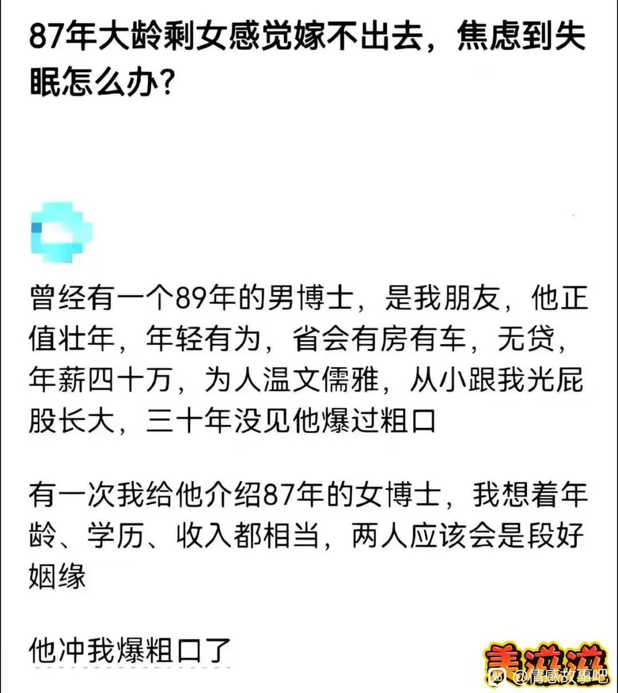

Дистанционизм
@432Ifantrygroup
@yantanzhang 嫁不出去你焦虑什么呢？是你自己把自己的最大价值当成了生育。什么叫“没人要”？只有资本家才会担心商品没人要，而你作为一个具有完全主体性的人，你需要谁来“要你”？
我是认为目前很多女人面临的问题，很一部分是自己思想落后导致的。没有人能代替群众完成自己解放自己的任务。

颜克权
@yantanzhang
女人唯一的价值就是青春。
但这并不是男人造成的，是女人自己选则的生存策略，年轻时能吃到性别红利，年龄大了就要做到被无情淘汰的事实。 https://t.co/iYtAfCTZaP